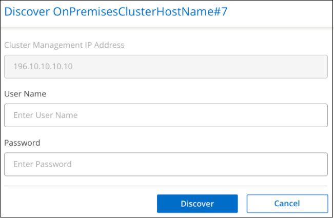
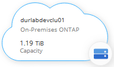

Demander de modifier un document
Demander de modifier un document Modifier sur GitHub
Modifier sur GitHub Guide des contributeurs
Guide des contributeursDécouverte des clusters ONTAP sur site
Contributeurs
BlueXP peut découvrir les clusters ONTAP dans votre environnement sur site, dans une configuration NetApp Private Storage et dans le cloud IBM. L’ajout de clusters sur site à BlueXP Canvas vous permet de gérer ces clusters à l’aide des mêmes outils que votre Cloud Volumes ONTAP et d’autres solutions de stockage dans le cloud.
En plus de pouvoir provisionner du stockage sur ces systèmes, l’ajout de ces systèmes à BlueXP facilite également l’affichage des informations sur l’état des contrats matériels et logiciels dans le portefeuille numérique et la configuration des services Cloud critiques pour ces clusters. Notamment la réplication des données dans le cloud, la sauvegarde des données dans le cloud, le Tiering des données inactives dans le cloud et l’exécution de analyses de conformité sur ces données.
De formation
-
Connecteur installé dans un fournisseur cloud ou sur site.
Si vous voulez transférer les données inactives vers le cloud, consultez les conditions du connecteur en fonction de l’emplacement où vous prévoyez d’effectuer le Tiering des données inactives.
-
L’adresse IP de gestion de cluster et le mot de passe du compte utilisateur admin pour ajouter le cluster à BlueXP.
BlueXP détecte les clusters ONTAP via HTTPS. Si vous utilisez des stratégies de pare-feu personnalisées, elles doivent répondre aux exigences suivantes :
-
L’hôte du connecteur doit autoriser l’accès HTTPS sortant via le port 443.
Si le connecteur est dans le Cloud, toutes les communications sortantes sont autorisées par le groupe de sécurité prédéfini.
-
Le cluster ONTAP doit autoriser l’accès HTTPS entrant via le port 443.
La stratégie de pare-feu " mgmt " par défaut permet l’accès HTTPS entrant à partir de toutes les adresses IP. Si vous avez modifié cette stratégie par défaut ou si vous avez créé votre propre stratégie de pare-feu, vous devez associer le protocole HTTPS à cette politique et activer l’accès à partir de l’hôte du connecteur.
-
-
Un ensemble valide d’informations d’identification du site de support NetApp. Découvrez comment "Ajoutez le compte NSS à BlueXP".
Affichage des clusters découverts et non découverts sur site
Vous pouvez utiliser le service Portefeuille numérique dans BlueXP pour afficher, découvrir et gérer vos clusters ONTAP sur site faisant l’objet d’un contrat de support.
-
Dans le menu de navigation BlueXP, sélectionnez gouvernance > porte-monnaie numérique.
-
Cliquez sur l’onglet On-local ONTAP.

Vos clusters ONTAP sont affichés avec un état indiquant s’ils ont été découverts dans BlueXP.
Si vous êtes invité à saisir d’abord les identifiants de votre compte sur le site de support NetApp, saisissez-les dans le tableau de bord du support. Une fois le compte ajouté, les clusters qui figurent dans ce compte sont affichés.
Affichage des informations sur le cluster et les détails du contrat
Vous pouvez utiliser Digital Wallet pour afficher les détails du cluster et l’état du contrat matériel et logiciel.
-
Dans le menu de navigation BlueXP, sélectionnez gouvernance > porte-monnaie numérique.
-
Dans Portefeuille numérique, cliquez sur l’onglet ONTAP sur site.
Les dates d’expiration du contrat logiciel et du contrat matériel apparaissent sur la ligne de chaque cluster.
-
Si le contrat est proche de la date d’expiration ou a expiré, vous pouvez cliquer sur l’icône de chat dans le coin inférieur droit de BlueXP pour demander une extension au contrat.
-
Pour les clusters que vous souhaitez obtenir des informations supplémentaires, cliquez sur
 pour développer les informations sur le cluster.
pour développer les informations sur le cluster.
Découverte de clusters sur site depuis BlueXP
Vous pouvez découvrir des clusters ONTAP sur site dans BlueXP à partir du portefeuille numérique ou du Canvas. Une fois découverts, ils sont disponibles en tant qu’environnement de travail dans BlueXP afin que vous puissiez gérer le cluster.
Découverte de clusters à partir du porte-monnaie numérique
Vous pouvez découvrir vos clusters ONTAP à partir du porte-monnaie numérique et les ajouter en tant qu’environnement de travail.
-
Dans le menu de navigation BlueXP, sélectionnez gouvernance > porte-monnaie numérique.
-
Dans Portefeuille numérique, cliquez sur l’onglet ONTAP sur site.

-
Cliquez sur Discover pour le cluster que vous souhaitez gérer via BlueXP.
-
Sur la page _découvrir le cluster_ONTAP, entrez le mot de passe du compte utilisateur admin et cliquez sur découvrir.

Notez que l’adresse IP de gestion de cluster est renseignée en fonction des informations de Digital Wallet.
L’état du cluster passe à découvert dans la page sur-site ONTAP.
BlueXP découvre le cluster et l’ajoute à un environnement de travail dans Canvas en utilisant le nom de cluster comme nom d’environnement de travail.

Vous pouvez activer les services pour ce cluster dans le panneau droit afin de répliquer les données depuis et vers le cluster, configurer le Tiering des données vers le cloud, sauvegarder des volumes dans le cloud ou exécuter des analyses de conformité sur les volumes. Vous pouvez également créer de nouveaux volumes ou lancer System Manager pour effectuer des tâches avancées.
Découverte des clusters à partir de la page Canvas
La page Canvas vous permet de détecter vos clusters ONTAP et de les ajouter sous forme d’environnement de travail. Ces étapes peuvent être utilisées dans les cas où le cluster n’est pas répertorié dans le portefeuille numérique car il n’a actuellement aucun contrat de support.
-
Sur la page Canevas, cliquez sur Ajouter un environnement de travail et sélectionnez ONTAP sur site.
-
Si vous y êtes invité, créez un connecteur.
Reportez-vous aux liens ci-dessus pour plus de détails.
-
Sur la page ONTAP Détails du cluster, entrez l’adresse IP de gestion du cluster, le mot de passe du compte utilisateur admin, puis cliquez sur Ajouter.

-
Sur la page Details & Credentials, entrez un nom et une description pour l’environnement de travail, puis cliquez sur Go.
BlueXP découvre le cluster et l’ajoute à un environnement de travail dans le Canvas.
Vous pouvez activer les services pour ce cluster dans le panneau droit afin de répliquer les données depuis et vers le cluster, configurer le Tiering des données vers le cloud, sauvegarder des volumes dans le cloud ou exécuter des analyses de conformité sur les volumes. Vous pouvez également créer de nouveaux volumes ou lancer System Manager pour effectuer des tâches avancées.